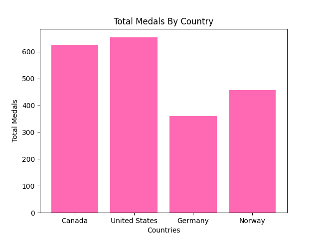
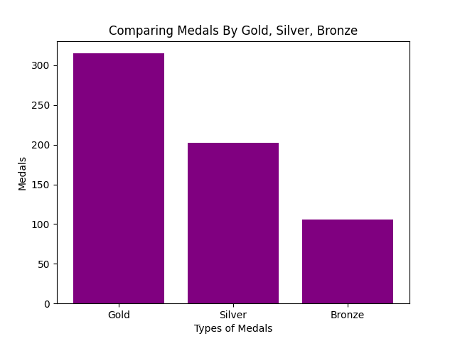

The Canadian Winter Olympics!
Statistics on the Canadian Winter Olympics

The Winter Olympic Games is a major international multi-sport event held once every four years for sports practiced on snow and ice. Canada has been represented in all 23 Winter Olympics and have a total of 625 medals! Let's see how Canada compares to other countries!
Gender Statistics in Canada

Out of the total 625 medals won by Canada, men have won 62% of them. Statistically, men win more Olympic medals due to women not being allowed to participate in the games.
Total Medals By Country
Over the years, countries from around the world have competed to show off their skills and represent their origins. In the graph shown, the United States has the most Winter Olympic medals with a total of 653. Canada follows very close behind with a total of 625. Typically, the countries with the highest population tend to have the most medals due to the higher amount of athletes.
Comparing Medals In Canada
Canada is famous for their hockey skills and have gained many gold medals from it. The graph shows Canada having a much higher gold medal count than silver and bronze with a total of 315 gold medals.